4 Resultaten
4.1 Abiotiek
Een overzicht van de tijdreeksen van relevante meetstations voor het studiegebied is gegeven in Figuren 4.1 en 4.2. Een overzicht van de locaties is beschikbaar via deze link.
![Overzicht van metingen van waterpeil (m), afvoer (m³/s) en temperatuur (°C) voor relevante meetstations doorheen de tijd. De stations staan geordend van stroomafwaarts naar stroomopwaarts. De meetstations van Damme en Maldegem liggen in het pand Zeebrugge-Balgerhoeke. De meetstations van Adegem-Balgerhoeke, Zomergem en Merendree Afwaarts liggen in het pand Balgerhoeke-Schipdonk. Het meetstation Merendree Opwaarts ligt stroomopwaarts van Schipdonk. Rode lijnen begrenzen de studieperiode (22 maart 2023 - 25 mei 2023). De groene lijn geeft de gesmoothe trend aan (span=1).](rapport-akl-vispasseerbaarheid_files/figure-html/tijdreeksen-1.png)
Figuur 4.1: Overzicht van metingen van waterpeil (m), afvoer (m³/s) en temperatuur (°C) voor relevante meetstations doorheen de tijd. De stations staan geordend van stroomafwaarts naar stroomopwaarts. De meetstations van Damme en Maldegem liggen in het pand Zeebrugge-Balgerhoeke. De meetstations van Adegem-Balgerhoeke, Zomergem en Merendree Afwaarts liggen in het pand Balgerhoeke-Schipdonk. Het meetstation Merendree Opwaarts ligt stroomopwaarts van Schipdonk. Rode lijnen begrenzen de studieperiode (22 maart 2023 - 25 mei 2023). De groene lijn geeft de gesmoothe trend aan (span=1).
![Overzicht van metingen van waterpeil (m), afvoer (m³/s) en temperatuur (°C) voor relevante meetstations doorheen de tijd voor de studieperiode (22 maart 2023 - 25 mei 2023) De stations staan geordend van stroomafwaarts naar stroomopwaarts. De meetstations van Damme en Maldegem liggen in het pand Zeebrugge-Balgerhoeke. De meetstations van Adegem-Balgerhoeke, Zomergem en Merendree Afwaarts liggen in het pand Balgerhoeke-Schipdonk. Het meetstation Merendree Opwaarts ligt stroomopwaarts van Schipdonk. De groene lijn geeft de gesmoothe trend aan (span=1).](rapport-akl-vispasseerbaarheid_files/figure-html/tijdreeksenstudieperiode-1.png)
Figuur 4.2: Overzicht van metingen van waterpeil (m), afvoer (m³/s) en temperatuur (°C) voor relevante meetstations doorheen de tijd voor de studieperiode (22 maart 2023 - 25 mei 2023) De stations staan geordend van stroomafwaarts naar stroomopwaarts. De meetstations van Damme en Maldegem liggen in het pand Zeebrugge-Balgerhoeke. De meetstations van Adegem-Balgerhoeke, Zomergem en Merendree Afwaarts liggen in het pand Balgerhoeke-Schipdonk. Het meetstation Merendree Opwaarts ligt stroomopwaarts van Schipdonk. De groene lijn geeft de gesmoothe trend aan (span=1).
Stroomafwaarts van Balgerhoeke t.h.v. het meetpunt te Maldegem, varieerde het waterpeil tijdens de studieperiode (22 maart 2023 - 25 mei 2023) tussen ongeveer 1.3 m en 2.8 m terwijl stroomopwaarts, t.h.v. het meetpunt te Balgerhoeke, het waterpeil slechts varieerde tussen de 4.9 en 5.1 meter. Het verval t.h.v. de stuw van Balgerhoeke bedroeg gemiddeld 3.30 meter en varieerde tussen 2.22 en 3.71 meter. Stroomopwaarts van Schipdonk varieerde het waterpeil tussen ongeveer 5.55 meter en 6.0 meter (meetpunt Merendree stroomopwaarts) terwijl stroomafwaarts het waterpeil slecht varieerde tussen de 4.95 en 5.15 meter (meetpunt Merendree stroomafwaarts). Het verval t.h.v. de stuw van Schipdonk bedroeg gemiddeld 0.70 meter en varieerde tussen 0.49 en 0.96 meter. Tussen Balgerhoeke en Schipdonk varieerde het waterpeil tussen de 4.95 en 5.10 meter (meetpunt Zomergem).
De afvoer stroomafwaarts van Balgerhoeke (meetpunt Damme) wordt gekenmerkt door plotse pieken van ongeveer 20 m³ en een gemiddelde afvoer van 2.03 m³/s (Tabel 4.1). Wanneer de piekdebieten niet in rekening worden gebracht bedraagt de gemiddelde afvoer -0.006 m³/s. De stroomopwaartse debieten (i.e. de negatieve waarden) bedragen 49 % van de data en zijn in absolute waarde niet meer dan 2.96 m³/s. De afvoer tussen Balgerhoeke en Schipdonk (meetpunt Zomergem) bedraagt zelden meer dan 2.5 m³/s, is gemiddeld 0.28 m³ en varieert tussen -1.51 m³/s en 3.01 m³/s. De stroomopwaartse debieten bedragen 26 % van de data en zijn in absolute waarde niet meer dan 1.51 m³/s. Ondanks het feit dat dit relatief lage debieten zijn, zijn deze wellicht wel voldoende voor verschillende technische vispassages. Een standaard bekkenvispassage en vertical slot vispassage vereisen bijvoorbeeld 0.15 m³/s. Een De Wit-vispassage, een variant op de vertical slot vispassage, is uitermate geschikt voor regio’s waar weinig water voorhanden is en waar te weinig afvoer is voor een nevenbeek (Coenen, 2013).
| Debiet | Damme | Zomergem |
|---|---|---|
| med. debiet (m³/s) | 0.00 | 0.27 |
| gem. debiet (m³/s) | 2.03 | 0.28 |
| Aandeel studieperiode < 0.1 m³/s | 0.66 | 0.33 |
| Aandeel studieperiode < 0.25 m³/s | 0.74 | 0.47 |
| Aandeel studieperiode < 0.5 m³/s | 0.79 | 0.71 |
| Aandeel studieperiode < 1 m³/s | 0.81 | 0.94 |
| Aandeel studieperiode < 2 m³/s | 0.84 | 0.99 |
| Aandeel studieperiode < 3 m³/s | 0.85 | 1.00 |
| Aandeel studieperiode < 4 m³/s | 0.86 | 1.00 |
| Aandeel studieperiode < 5 m³/s | 0.86 | 1.00 |
| Aandeel studieperiode < 10 m³/s | 0.88 | 1.00 |
| Aandeel studieperiode < 20 m³/s | 0.98 | 1.00 |
| Aandeel studieperiode < 30 m³/s | 1.00 | 1.00 |
4.2 Vissen
4.2.1 Data-overzicht
De fuiken, hokfuik en schietfuiken te Balgerhoeke werden om logistische redenen samengenomen en kregen daarom één meetplaatscode (balfuik) toegekend. In totaal werden 4575 vissen gevangen met de fuiken te Balgerhoeke (Tabel 4.2). In de palinggoot werd ongeveer 5 % gevangen (59 elvers) van wat er gevangen werd met de substraten in Balgerhoeke (1270 elvers) (Tabel 4.3). De substraten t.h.v. de oevers te Balgerhoeke vingen in totaal ongeveer 5 tot 10 keer meer dan de substraten t.h.v. de oude sluis en palinggoot respectievelijk. In totaal werden 8524 vissen gevangen met de fuiken te Schipdonk (Tabel 4.2). In totaal werden t.h.v. de sifon meer vissen gevangen dan t.h.v. de sluis van Schipdonk ondanks dat t.h.v de sluis twee fuiken werden gebruikt en t.h.v. de sifon slechts één.
| Meetplaatscode | hokfuik | schietfuik | palinggoot | substraat |
|---|---|---|---|---|
| balfuik | 105 | 4470 | 0 | 0 |
| balgoo | 0 | 0 | 59 | 0 |
| balli | 0 | 0 | 0 | 506 |
| balre | 0 | 0 | 0 | 600 |
| balsgo | 0 | 0 | 0 | 65 |
| balslu | 0 | 0 | 0 | 99 |
| merlo | 0 | 2305 | 0 | 0 |
| merro | 0 | 1865 | 0 | 0 |
| mersif | 0 | 4354 | 0 | 0 |
| Datum | balfuik | balgoo | balli | balre | balsgo | balslu | merlo | merro | mersif |
|---|---|---|---|---|---|---|---|---|---|
| 2023-03-22 | 31 | 0 | 0 | 0 | 0 | 1 | 0 | 0 | 0 |
| 2023-03-24 | 226 | 2 | 1 | 4 | 0 | 3 | 172 | 78 | 436 |
| 2023-03-27 | 240 | 0 | 5 | 1 | 0 | 0 | 145 | 27 | 1242 |
| 2023-03-29 | 156 | 0 | 0 | 0 | 0 | 0 | 215 | 90 | 639 |
| 2023-03-31 | 465 | 0 | 2 | 3 | 0 | 0 | 33 | 42 | 218 |
| 2023-04-03 | 196 | 0 | 25 | 77 | 13 | 3 | 166 | 139 | 117 |
| 2023-04-05 | 283 | 0 | 3 | 9 | 2 | 0 | 172 | 156 | 142 |
| 2023-04-07 | 252 | 0 | 4 | 0 | 0 | 2 | 124 | 113 | 97 |
| 2023-04-10 | 374 | 0 | 11 | 14 | 2 | 2 | 138 | 77 | 237 |
| 2023-04-12 | 506 | 0 | 2 | 1 | 3 | 0 | 35 | 103 | 117 |
| 2023-04-14 | 107 | 0 | 12 | 16 | 0 | 2 | 59 | 85 | 90 |
| 2023-04-17 | 172 | 3 | 23 | 35 | 7 | 1 | 114 | 81 | 132 |
| 2023-04-19 | 121 | 0 | 10 | 11 | 4 | 4 | 98 | 26 | 70 |
| 2023-04-21 | 134 | 1 | 4 | 10 | 0 | 8 | 104 | 151 | 137 |
| 2023-04-24 | 222 | 0 | 12 | 20 | 2 | 4 | 92 | 81 | 77 |
| 2023-04-26 | 354 | 1 | 9 | 25 | 1 | 1 | 23 | 73 | 141 |
| 2023-04-28 | 150 | 5 | 3 | 6 | 1 | 5 | 95 | 52 | 62 |
| 2023-05-02 | 127 | 5 | 8 | 7 | 10 | 6 | 63 | 137 | 163 |
| 2023-05-05 | 228 | 5 | 43 | 59 | 6 | 10 | 100 | 102 | 65 |
| 2023-05-08 | 97 | 18 | 167 | 67 | 0 | 10 | 85 | 100 | 39 |
| 2023-05-10 | 44 | 3 | 76 | 118 | 0 | 17 | 60 | 51 | 8 |
| 2023-05-12 | 26 | 2 | 47 | 73 | 5 | 7 | 40 | 81 | 35 |
| 2023-05-15 | 35 | 10 | 31 | 32 | 9 | 7 | 99 | 0 | 36 |
| 2023-05-17 | 29 | 4 | 8 | 12 | 0 | 6 | 73 | 20 | 54 |
4.2.2 Fuiken
4.2.2.1 Gemeenschapsstructuur
Alle geobserveerde soorten (19 in totaal) die werden gevangen in Balgerhoeke werden ook gevangen in Schipdonk (met uitzondering van één driedoornige stekelbaars in Balgerhoeke) (Tabellen 4.4, 4.5, 4.6, 4.7, 4.8, 4.9, 4.10 en 4.11). In Balgerhoeke, Schipdonk sifon en Schipdonk sluizen bedroeg de Shannon diversiteit gemiddeld 1.19, 1.43 en 1.45 respectievelijk. Er waren sterke verschillen in de aantallen van sommige soorten. In Balgerhoeke werd in totaal veel meer bittervoorn en snoek en veel minder kolblei en zonnebaars gevangen (Figuren 4.3 en 4.4). In zowel Balgerhoeke als Schipdonk werden relatief grote aantallen baars, blankvoorn en pos aangetroffen in het begin van de paaiperiode. Naar het einde van de paaiperiode van deze soorten, daalden ook hun aantallen stroomafwaarts van de complexen. Dit wijst erop dat voor deze soorten, die de vangsten domineren, de complexen belangrijke barrières zijn. Aantallen en soort werden gebruikt om de gemeenschapsstructuur van de drie sites (Balgerhoeke, Schipdonk sifon en Schipdonk sluis) en drie maanden te vergelijken (PERMANOVA, Bray-curtis afstand, vierde-wortel van de fuikvangsten per fuikdag en per soort). Alle drie sites bleken significant verschillend met de grootste verschillen tussen Balgerhoeke enerzijds en Schipdonk anderzijds (Figuur 4.5). Er werd een significant verschil genoteerd tussen de maanden mei enerzijds en maart en april anderzijds. De variabiliteit in gemeenschapsstructuur was voornamelijk het gevolg van verschillen in voorkomen van pos (vnl. Balgerhoeke), baars (vnl. Balgerhoeke), brasem (vnl. Schipdonk sifon), blankvoorn (vnl. Schipdonk sifon) en kolblei (vnl. Schipdonk sifon).
| soort | 03-2023 | 04-2023 | 05-2023 |
|---|---|---|---|
| baars | 11.40 | 21.89 | 2.21 |
| bittervoorn | 0.50 | 0.76 | 0.33 |
| blankvoorn | 11.24 | 4.19 | 0.25 |
| brasem | 3.75 | 1.45 | 0 |
| driedoornige stekelbaars | 0.25 | 0 | 0 |
| hybride | 0.25 | 0 | 0 |
| kolblei | 0.50 | 0.46 | 0.21 |
| paling | 0.81 | 0.68 | 0.76 |
| pos | 20.87 | 21.92 | 9.83 |
| rietvoorn | 0.25 | 0 | 0 |
| riviergrondel | 1.17 | 0.51 | 0 |
| snoek | 0.24 | 0.25 | 0.18 |
| snoekbaars | 0.25 | 0.46 | 0.17 |
| zwartbekgrondel | 3.05 | 1.98 | 1.36 |
| blauwband | 0 | 0.25 | 0 |
| giebel | 0 | 0.21 | 0.25 |
| karper | 0 | 0.25 | 0 |
| zeelt | 0 | 0 | 0.25 |
| zonnebaars | 0 | 0 | 0.25 |
| soort | 03-2023 | 04-2023 | 05-2023 |
|---|---|---|---|
| baars | 245 | 1163 | 92 |
| bittervoorn | 4 | 42 | 4 |
| blankvoorn | 237 | 221 | 3 |
| brasem | 62 | 52 | 0 |
| driedoornige stekelbaars | 1 | 0 | 0 |
| hybride | 1 | 0 | 0 |
| kolblei | 2 | 9 | 2 |
| paling | 13 | 31 | 25 |
| pos | 460 | 1206 | 399 |
| rietvoorn | 1 | 0 | 0 |
| riviergrondel | 20 | 20 | 0 |
| snoek | 3 | 7 | 4 |
| snoekbaars | 1 | 9 | 2 |
| zwartbekgrondel | 68 | 107 | 50 |
| blauwband | 0 | 1 | 0 |
| giebel | 0 | 2 | 1 |
| karper | 0 | 1 | 0 |
| zeelt | 0 | 0 | 3 |
| zonnebaars | 0 | 0 | 1 |
| soort | 03-2023 | 04-2023 | 05-2023 |
|---|---|---|---|
| baars | 37.32 | 12.36 | 6.01 |
| bittervoorn | 0.41 | 0 | 0 |
| blankvoorn | 108.74 | 6.45 | 2.92 |
| brasem | 9.78 | 4.97 | 1.69 |
| hybride | 0.45 | 0.50 | 0 |
| kolblei | 43.67 | 2.10 | 1.28 |
| paling | 1.19 | 1.19 | 0.97 |
| pos | 51.84 | 22.86 | 7.58 |
| riviergrondel | 0.83 | 0.75 | 0.62 |
| snoek | 0.33 | 0.33 | 0.33 |
| snoekbaars | 1.35 | 0.67 | 0.38 |
| zeelt | 0.47 | 0.42 | 0.33 |
| zwartbekgrondel | 3.61 | 2.50 | 0.83 |
| blauwband | 0 | 0.33 | 0.50 |
| giebel | 0 | 0.42 | 0 |
| rietvoorn | 0 | 0.50 | 0 |
| zonnebaars | 0 | 0.67 | 0.50 |
| soort | 03-2023 | 04-2023 | 05-2023 |
|---|---|---|---|
| baars | 392 | 336 | 117 |
| bittervoorn | 1 | 0 | 0 |
| blankvoorn | 1049 | 160 | 60 |
| brasem | 65 | 127 | 25 |
| hybride | 2 | 1 | 0 |
| kolblei | 448 | 37 | 21 |
| paling | 9 | 25 | 12 |
| pos | 524 | 639 | 143 |
| riviergrondel | 4 | 8 | 4 |
| snoek | 1 | 2 | 1 |
| snoekbaars | 12 | 14 | 2 |
| zeelt | 3 | 2 | 1 |
| zwartbekgrondel | 25 | 56 | 10 |
| blauwband | 0 | 1 | 1 |
| giebel | 0 | 2 | 0 |
| rietvoorn | 0 | 1 | 0 |
| zonnebaars | 0 | 8 | 3 |
| soort | 03-2023 | 04-2023 | 05-2023 |
|---|---|---|---|
| baars | 4.03 | 4.85 | 3.25 |
| bittervoorn | 0.17 | 0 | 0 |
| blankvoorn | 10.48 | 5.95 | 2.58 |
| brasem | 1.83 | 1.33 | 0.42 |
| kolblei | 0.99 | 2.01 | 0.83 |
| paling | 0.71 | 0.35 | 0.34 |
| pos | 3.93 | 6.18 | 5.56 |
| riviergrondel | 0.63 | 0.36 | 0.21 |
| snoekbaars | 0.84 | 0.47 | 0.37 |
| zwartbekgrondel | 0.74 | 2.26 | 1.66 |
| giebel | 0 | 0.17 | 0 |
| hybride | 0 | 0.25 | 0 |
| karper | 0 | 0.21 | 0 |
| rietvoorn | 0 | 0.17 | 0 |
| snoek | 0 | 0.17 | 0 |
| zonnebaars | 0 | 0.31 | 0.33 |
| blauwband | 0 | 0 | 0.12 |
| zeelt | 0 | 0 | 0.12 |
| soort | 03-2023 | 04-2023 | 05-2023 |
|---|---|---|---|
| baars | 149 | 514 | 256 |
| bittervoorn | 1 | 0 | 0 |
| blankvoorn | 333 | 605 | 178 |
| brasem | 46 | 127 | 4 |
| kolblei | 28 | 134 | 46 |
| paling | 28 | 17 | 12 |
| pos | 150 | 667 | 397 |
| riviergrondel | 16 | 19 | 2 |
| snoekbaars | 27 | 33 | 18 |
| zwartbekgrondel | 24 | 220 | 87 |
| giebel | 0 | 1 | 0 |
| hybride | 0 | 1 | 0 |
| karper | 0 | 2 | 0 |
| rietvoorn | 0 | 2 | 0 |
| snoek | 0 | 2 | 0 |
| zonnebaars | 0 | 13 | 9 |
| blauwband | 0 | 0 | 1 |
| zeelt | 0 | 0 | 1 |
| soort | Balgerhoeke | Schipdonk sifon | Schipdonk sluis |
|---|---|---|---|
| baars | 13.97 | 15.17 | 4.23 |
| bittervoorn | 0.67 | 0.41 | 0.17 |
| blankvoorn | 5.63 | 23.93 | 5.67 |
| blauwband | 0.25 | 0.42 | 0.12 |
| brasem | 2.22 | 5.04 | 1.37 |
| driedoornige stekelbaars | 0.25 | 0 | 0 |
| giebel | 0.22 | 0.42 | 0.17 |
| hybride | 0.25 | 0.47 | 0.25 |
| karper | 0.25 | 0 | 0.21 |
| kolblei | 0.39 | 11.64 | 1.41 |
| paling | 0.72 | 1.12 | 0.46 |
| pos | 18.18 | 23.25 | 5.59 |
| rietvoorn | 0.25 | 0.50 | 0.17 |
| riviergrondel | 0.73 | 0.74 | 0.43 |
| snoek | 0.22 | 0.33 | 0.17 |
| snoekbaars | 0.35 | 0.81 | 0.52 |
| zeelt | 0.25 | 0.43 | 0.12 |
| zonnebaars | 0.25 | 0.62 | 0.32 |
| zwartbekgrondel | 2.05 | 2.22 | 1.84 |
| soort | Balgerhoeke | Schipdonk sifon | Schipdonk sluis |
|---|---|---|---|
| baars | 1500 | 845 | 919 |
| bittervoorn | 50 | 1 | 1 |
| blankvoorn | 461 | 1269 | 1116 |
| blauwband | 1 | 2 | 1 |
| brasem | 114 | 217 | 177 |
| driedoornige stekelbaars | 1 | 0 | 0 |
| giebel | 3 | 2 | 1 |
| hybride | 1 | 3 | 1 |
| karper | 1 | 0 | 2 |
| kolblei | 13 | 506 | 208 |
| paling | 69 | 46 | 57 |
| pos | 2065 | 1306 | 1214 |
| rietvoorn | 1 | 1 | 2 |
| riviergrondel | 40 | 16 | 37 |
| snoek | 14 | 4 | 2 |
| snoekbaars | 12 | 28 | 78 |
| zeelt | 3 | 6 | 1 |
| zonnebaars | 1 | 11 | 22 |
| zwartbekgrondel | 225 | 91 | 331 |
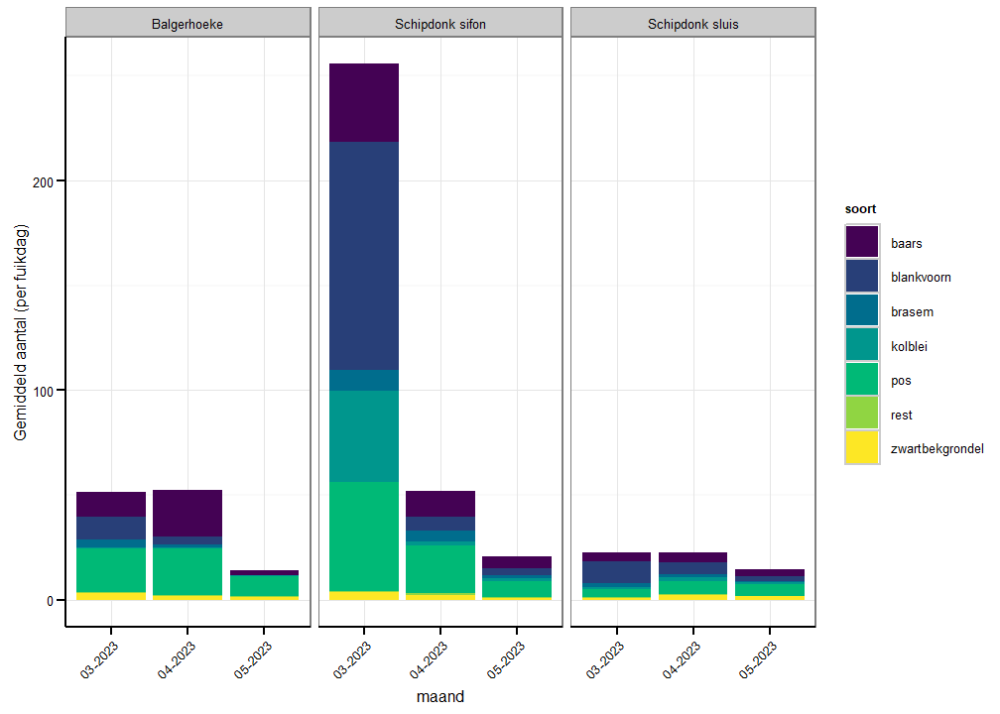
Figuur 4.3: Verdeling van de gemiddelde vangsten per fuikdag en per vissoort in Balgerhoeke, Schipdonk sifon en Schipdonk sluis per maand (rest = overige vissoorten die elk minder dan 5% van de vangsten uitmaken).
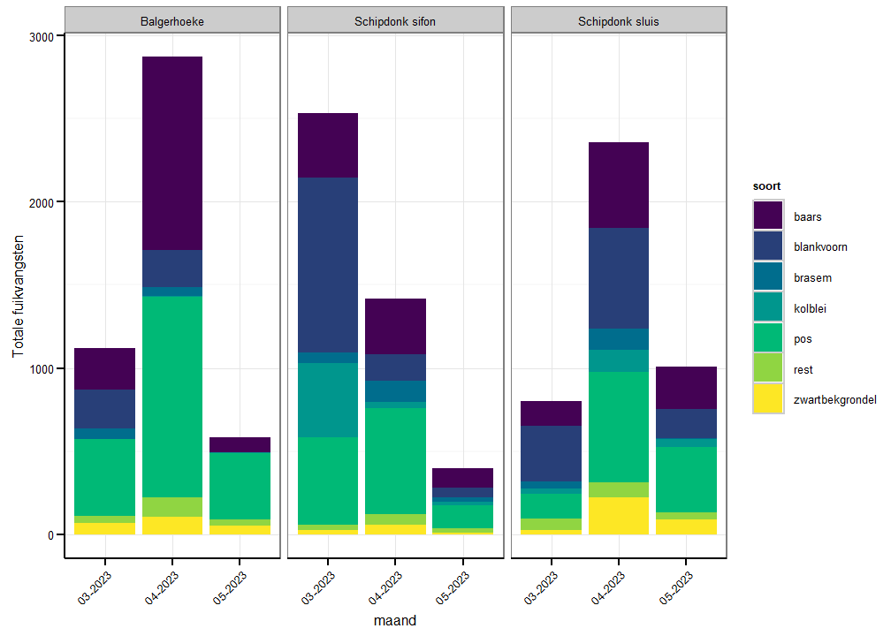
Figuur 4.4: Verdeling van de totale fuikvangsten per vissoort in Balgerhoeke, Schipdonk sifon en Schipdonk sluis per maand (rest = overige vissoorten die elk minder dan 5% van de vangsten uitmaken).
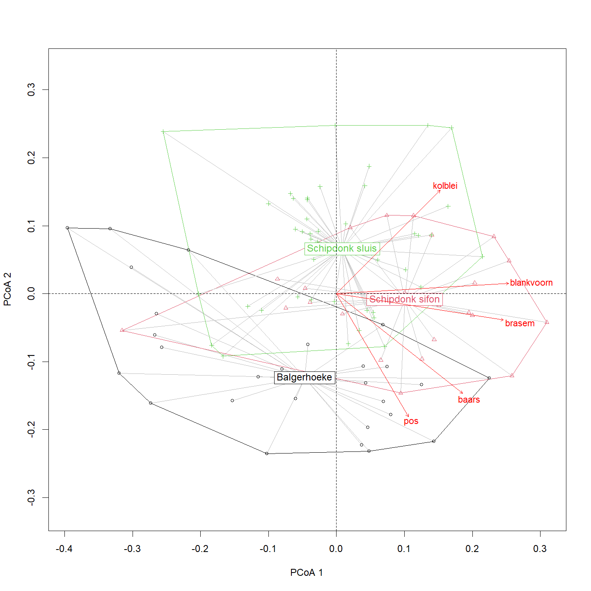
Figuur 4.5: Principale coördinaten analyse (PCOA, CPUE, vierde-machtswortel transformatie, Bray-Curtis afstanden) met weergave van de verschillende sites (als omkaderingen) en de belangrijkste soorten (weergave als pijlen met lengte pijlen representatief voor bijdrage; p>0.05 en R²>0.4) om verschillen in gemeenschapsstructuur te verklaren.
4.2.2.2 Lengteverdeling
De lengteverdeling per soort (Figuur 4.6) verschilde in een aantal gevallen tussen de drie locaties (Balgerhoeke, sluizen van Schipdonk en de sifon van Schipdonk). Voor blauwband, driedoornige stekelbaars, giebel, karper, rietvoorn, snoek, en zeelt en zonnebaars waren de aantallen te klein om onderbouwde conclusies te trekken over mogelijke verschillen tussen de locaties. Baars was groter t.h.v. de Schipdonk sluis (Figuur 4.7). Blankvoorn was het grootst t.h.v. Balgerhoeke gevolgd door Schipdonk sluis en sifon. Brasem was groter t.h.v. Schipdonk sluis. Kolblei was groter t.h.v. de Schipdonk sluis dan Schipdonk sifon. Pos was het kleinst t.h.v. Schipdonk sluis. Snoekbaars was veel groter in Balgerhoeke. Zwartbekgrondel was het grootst t.h.v. Balgerhoeke gevolgd door Schipdonk sifon en sluis.
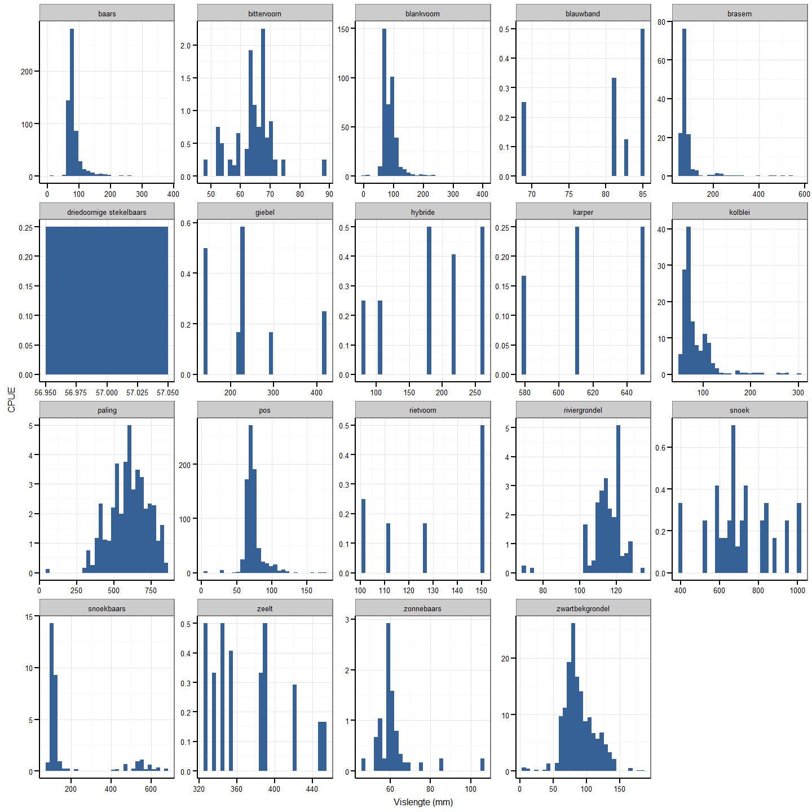
Figuur 4.6: Lengteverdeling voor de verschillende gevangen soorten voor de hele periode voor Schipdonk en Balgerhoeke. De inverse van de CPUE werd gebruikt als gewicht voor de metingen.
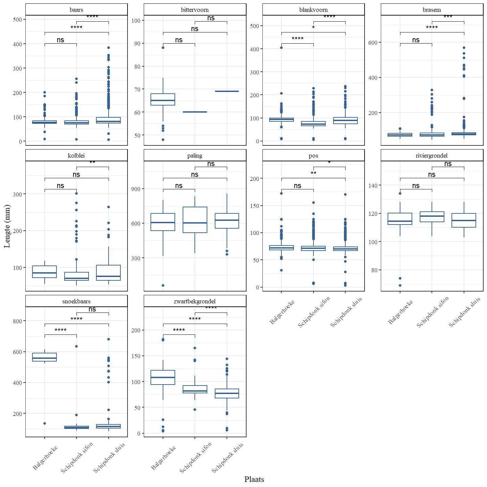
Figuur 4.7: Boxplots die de gemiddelde lengte van de fuikvangsten voorstellen in functie van de bemonsteringslocatie. Gepaarde wilcoxon ranks sum testen met Bonferroni correctie werden gebruikt. p-waarden werden geclassificeerd als niet-significant of ns ($>$0.05), * (0.05-0.01), ** (0.01-0.001), *** (0.001-0.0001), **** (0.0001-0).
4.2.2.3 Hervangst
Enkel in Balgerhoeke werden vissen gemerkt om na te gaan hoeveel vissen zich ophopen ter hoogte van de barrière. Het aandeel hervangst steeg doorheen de tijd licht voor baars, bittervoorn, blankvoorn en brasem en leek sterk te stijgen voor paling (Figuur 4.8). Pos, snoek en snoekbaars kenden aanvankelijk een stijging in hervangst maar deze daalde weer na een zekere periode. Giebel, kolblei en riviergrondel werden nooit opnieuw gevangen. Zwartbekgrondels werden verwijderd bij vangst omdat dit een invasieve exoot is.
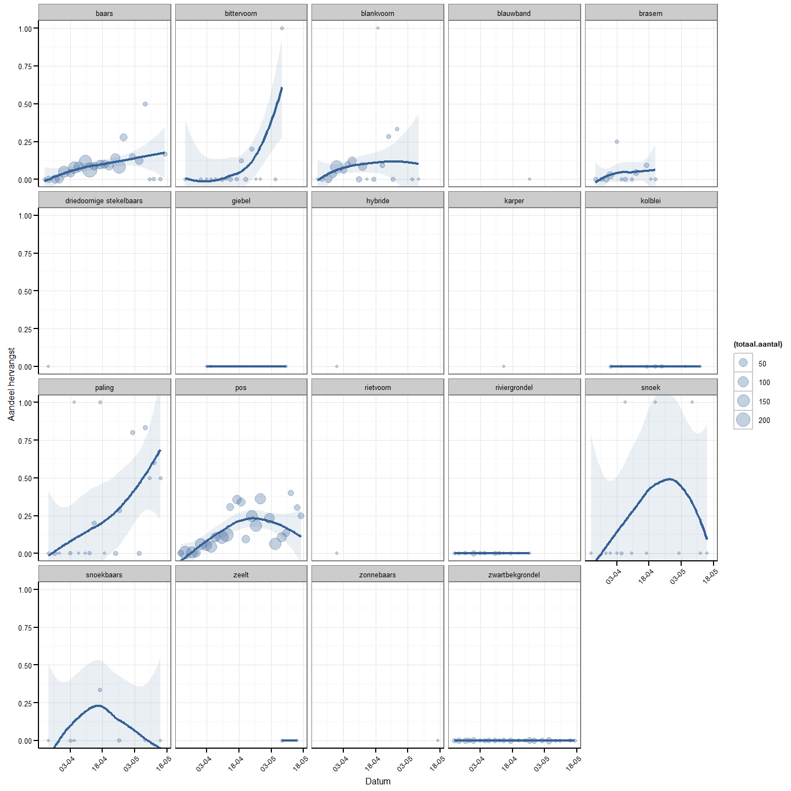
Figuur 4.8: Aandeel hervangst op totale fuikvangst per soort. Elk punt geeft de vangst van één dag weer. De grootte van de punten weerspiegelt de totale vangst per soort. Loess smoothing (span=1) werd gebruikt om een eventuele trend te visualiseren (blauwe lijn). Voor deze smoothing krijgen dagen met een grotere vangst een groter gewicht (lineaire verhouding toekenning gewicht). 95% betrouwbaarheidsintervallen van de loess smoothing zijn weergegeven als een grijze band.
4.2.2.4 Reproductie
Om zicht te krijgen op het aandeel individuen met paaikenmerken, werden hervangsten buiten beschouwing gelaten (Figuur 4.9). Op die manier werd verhinderd dat vissen die zich ophopen ter hoogte van de barrière meerdere keren werden geteld. Van de soorten waarvan er voldoende individuen waren om betrouwbare trends te bekomen, vertoonden vooral baars (25-50%) en pos (15-45%) paaikenmerken. De trend doorheen de tijd was voor beide soorten grillig maar leek voor baars eerst te dalen en dan te stijgen terwijl deze voor pos voornamelijk licht daalde. Blankvoorn vertoonde zelden paaikenmerken (5-10%). Voor brasem, giebel en kolblei werden geen paaikenmerken vastgesteld.
Men zou verwachten dat individuen die op het punt staan om te paaien een grotere drang hebben om te migreren. Dit zou betekenen dat er een grotere kans is om paaikenmerken te observeren bij gemerkte individuen (i.e., individuen die meermaals verbleven t.h.v. de barrière). Wanneer we echter het aandeel vissen met paaikenmerken die slechts één keer werden gevangen (i.e. niet-gemerkte vissen: Figuur 4.9) vergelijken met het aandeel hervangsten met paaikenmerken (i.e. gemerkte vissen: Figuur 4.10) dan zien we bij baars en pos een verlaagde kans op paaikenmerken gegeven dat een individu hervangst is (i.e., gemerkt is). Dit wordt ook bevestigd door een logistische gam analyse voor baars, blankvoorn, en pos waarbij voor elke soort een model is ontwikkeld met als respons of een individu al dan niet paaikenmerken vertoont en als verklarende factoren de vislengte, of een individu al dan niet hervangst is (i.e., gemerkt is) en de datum (die werd beschouwd als een smooth factor, waarbij we niet zozeer geïnteresseerd zijn in het effect van deze factor maar het effect ervan erkennen en in rekening brengen). Voor baars en pos had datum als smooth factor een significant effect wat te verwachten is gezien het sterk temporeel karakter van paaikenmerken. Voor baars en pos had de aanwezigheid van een merkteken (i.e. hervangst) een significant negatief effect op de aanwezigheid van paaikenmerken. Dit suggereert dat vissen met paaikenmerken zich niet bij de barrière ophoopten. Voor baars was ook de vislengte belangrijk waarbij langere individuen een significant grotere kans hadden om paaikenmerken te vertonen. Voor blankvoorn had geen enkele factor (datum, merkteken of vislengte) een significant effect op de kans op paaikenmerken.
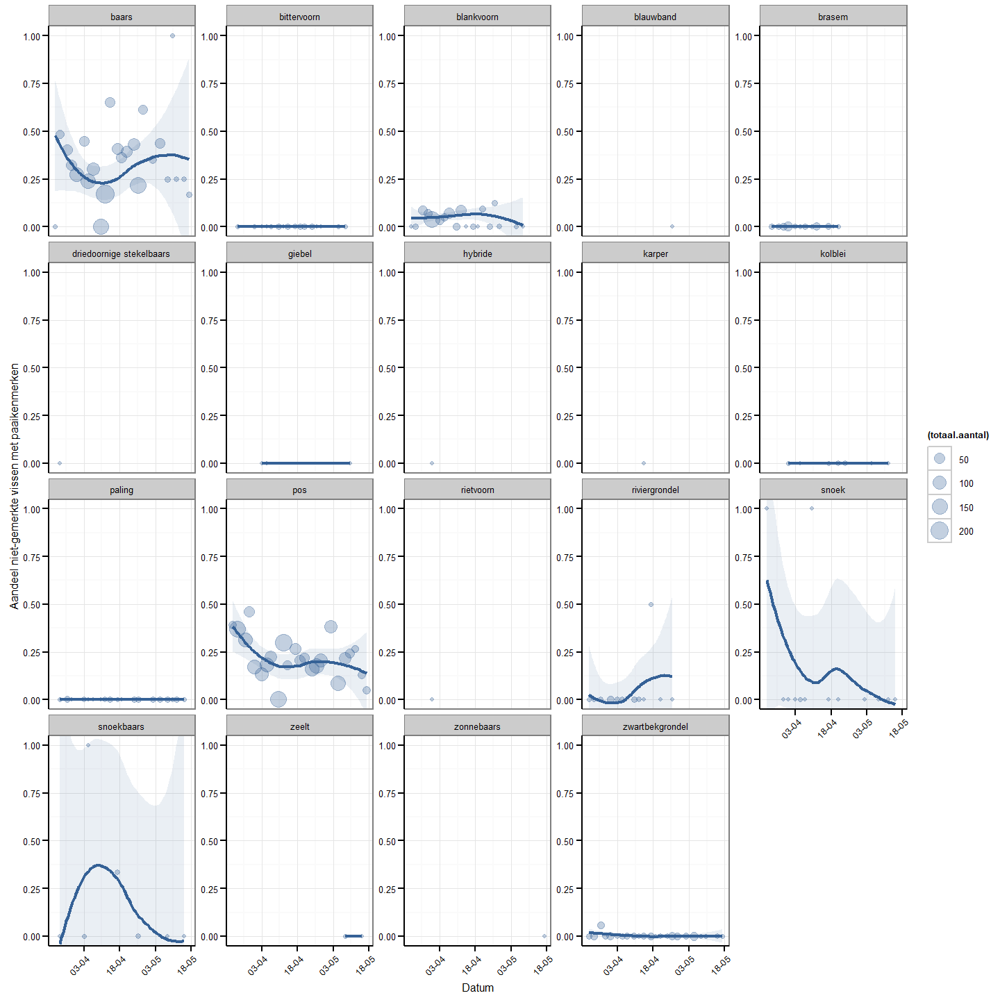
Figuur 4.9: Aandeel niet-gemerkte vissen met paaikenmerken op totale fuikvangst per soort. Elk punt geeft de vangst van één dag weer. De grootte van de punten weerspiegelt de totale vangst per soort. Loess smoothing (span=1) werd gebruikt om een eventuele trend te visualiseren (blauwe lijn). Voor deze smoothing krijgen dagen met een grotere vangst een groter gewicht (lineaire verhouding toekenning gewicht). 95% betrouwbaarheidsintervallen van de loess smoothing zijn weergegeven als een grijze band.
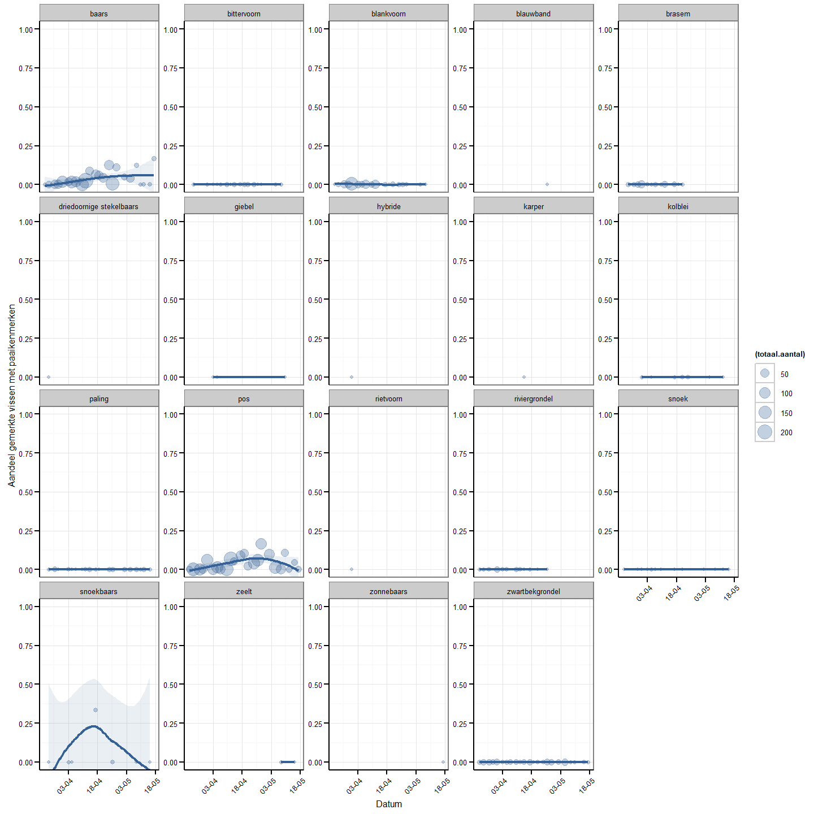
Figuur 4.10: Aandeel gemerkte vissen met paaikenmerken op totale fuikvangst per soort. Elk punt geeft de vangst van één dag weer. De grootte van de punten weerspiegelt de totale vangst per soort. Loess smoothing (span=1) werd gebruikt om een eventuele trend te visualiseren (blauwe lijn). Voor deze smoothing krijgen dagen met een grotere vangst een groter gewicht (lineaire verhouding toekenning gewicht). 95% betrouwbaarheidsintervallen van de loess smoothing zijn weergegeven als een grijze band.
4.2.3 Jonge paling
Op basis van de lengteverdeling (Figuur 4.11 en Figuur 4.15) kunnen we stellen dat de gevangen jonge paling vooral elvers betrof. Er werden enkel elvers gevonden t.h.v. Balgerhoeke. Het feit dat geen elvers gevangen werden in de substraten t.h.v. Schipdonk geeft aan dat elvers niet in staat zijn om de barrière van Balgerhoeke te passeren. In de palinggoot te Balgerhoeke werden tijdens de studieperiode 59 elvers gevangen met een gemiddelde lengte van 146 mm (standaarddeviatie van 25 mm). In de substraten te Balgerhoeke werden in totaal 1268 elvers gevangen met een gemiddelde lengte van 151 mm (standaarddeviatie van 29 mm). De lengtes lijken geen trend te vertonen doorheen de tijd (Figuur 4.13 en Figuur 4.17). Zowel voor de palinggoot als de substraten was er een piek in aantallen rond midden mei. Daarvoor bleven de aantallen nagenoeg constant. Aangepast spuibeheer ter hoogte van Zeebrugge werd toegepast op 18/3, 31/3, 22/4, 27/4, 2/5 en 3/5 voor 270, 255, 450, 285, 450 en 575 minuten respectievelijk.
4.2.3.1 Palinggoot
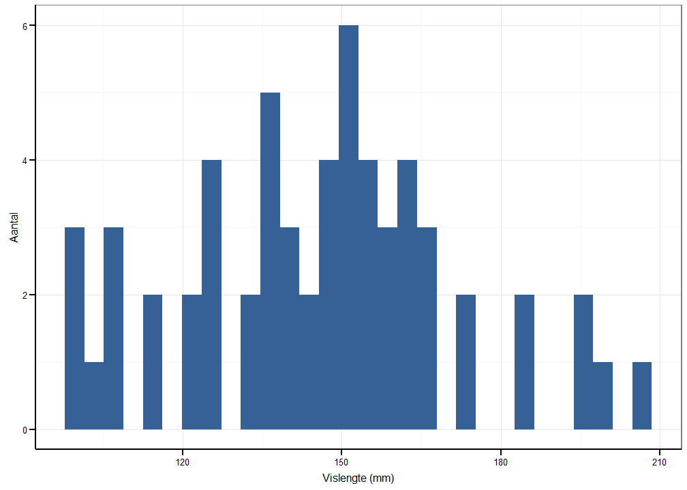
Figuur 4.11: Lengteverdeling van elvers gevangen met de palinggoot in Balgerhoeke voor de hele studieperiode (22 maart 2023 - 25 mei 2023).
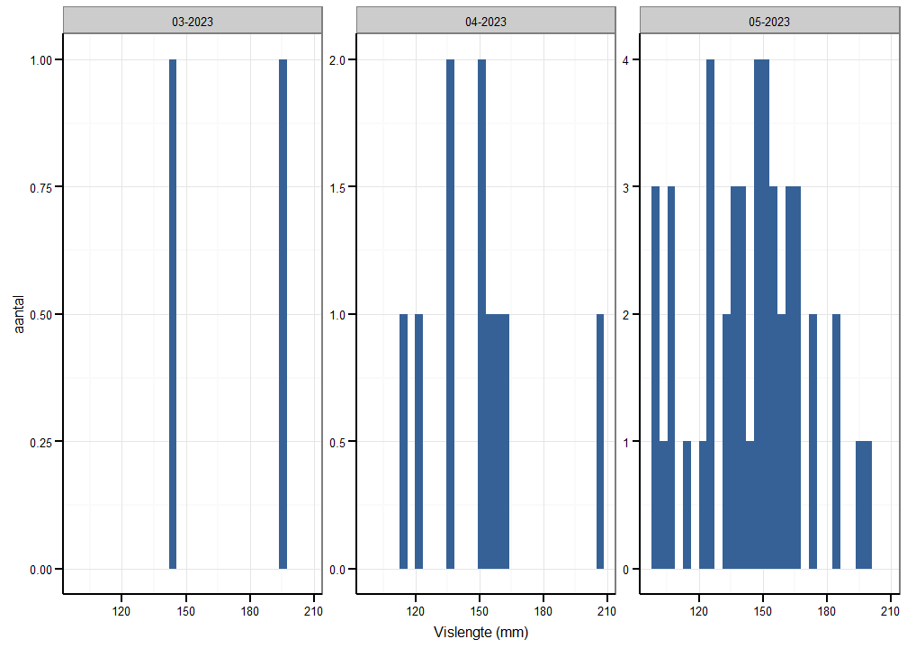
Figuur 4.12: Lengteverdeling van elvers gevangen met de palinggoot in Balgerhoeke voor de drie verschillende maanden van de studieperiode (22 maart 2023 - 25 mei 2023).
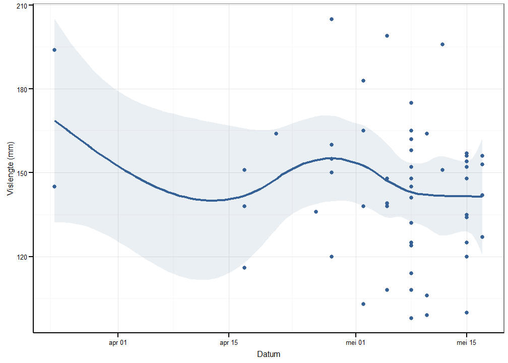
Figuur 4.13: Lengte van elvers gevangen met de palinggoot in Balgerhoeke in functie van de tijd.
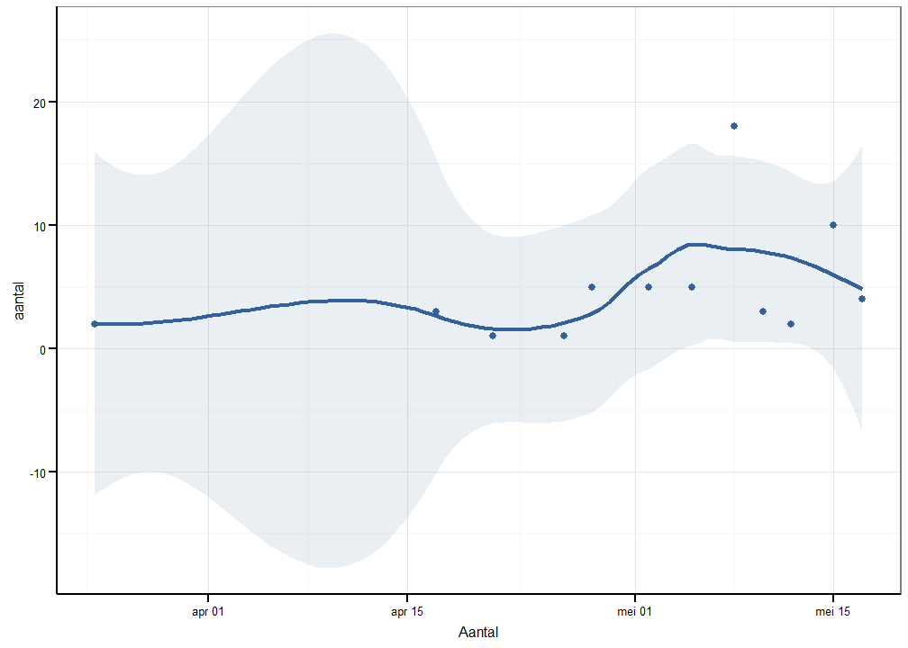
Figuur 4.14: Aantal elvers gevangen met de palinggoot in Balgerhoeke in functie van de tijd.
4.2.3.2 Substraten
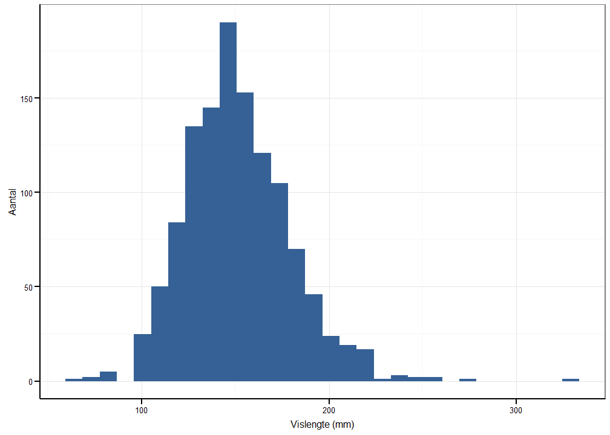
Figuur 4.15: Lengteverdeling van elvers gevangen met substraten in Balgerhoeke voor de hele studieperiode (22 maart 2023 - 25 mei 2023).
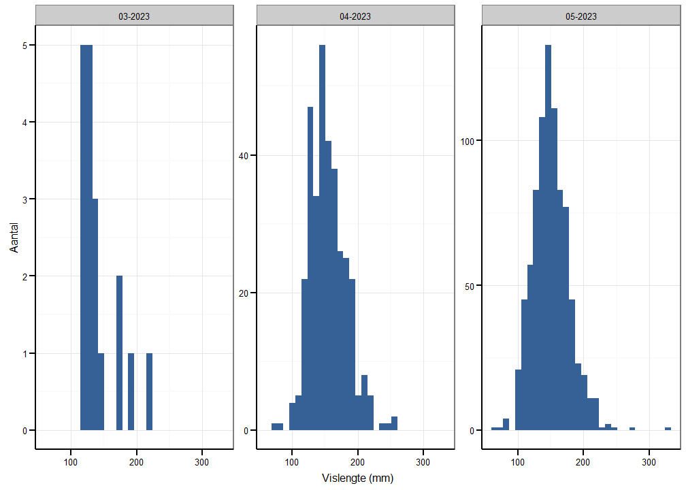
Figuur 4.16: Lengteverdeling van elvers gevangen met substraten in Balgerhoeke voor de drie verschillende maanden van de studieperiode (22 maart 2023 - 25 mei 2023).
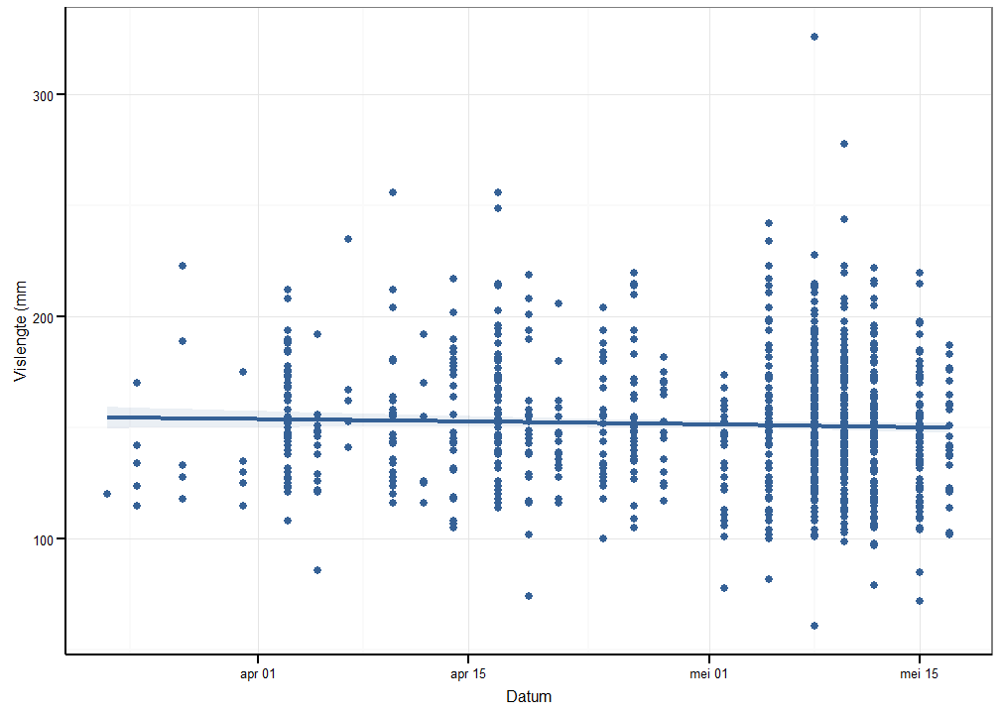
Figuur 4.17: Lengte van elvers gevangen met substraten in Balgerhoeke in functie van de tijd.
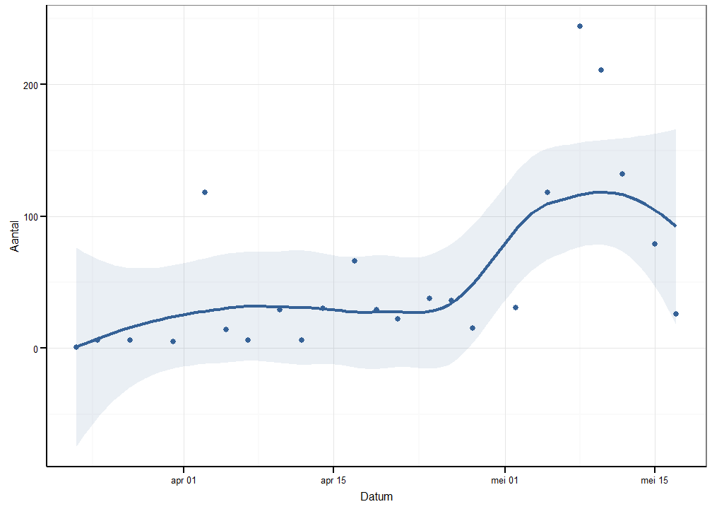
Figuur 4.18: Aantal elvers gevangen met de substraten in Balgerhoeke in functie van de tijd.
Referenties
 Bruneel, S., et. al. (2025). 10.21436/inbor.132763058
Bruneel, S., et. al. (2025). 10.21436/inbor.132763058